Top 100 Albums
The greatest albums of all time!!! (According to me)
- Click on a Tag to filter the list!
- One album per artist.
- Classical releases are not eligible and will be covered in a separate list.
100. Zutto Mayonaka de Ii no ni - Hisohiso banashi
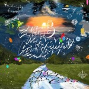
Year: 2019
Country: 🇯🇵 Japan
Genres: Yakousei
Favorite Song: Kansaete Kuyashiiwa
99. Ulcerate - Everything Is Fire
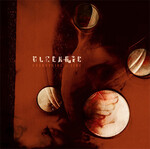
Year: 2009
Country: 🇳🇿 New Zealand
Genres: Dissonant Death Metal
Favorite Song: Drown Within
98. Phoebe Bridgers - Punisher
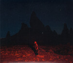
Year: 2020
Country: 🇺🇸 USA
Genres: Singer-Songwriter
Favorite Song: I Know the End
97. Ton Steine Scherben - Keine Macht für Niemand
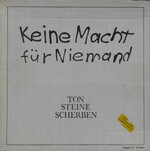
Year: 1972
Country: 🇩🇪 Germany
Genres: Deutschrock
Favorite Song: Die letzte Schlacht gewinnen wir
96. Kalafina - Seventh Heaven
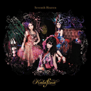
Year: 2009
Country: 🇯🇵 Japan
Genres: J-Pop, Art Pop
Favorite Song: Sprinter
95. Lily Chou-Chou - Kokyuu
Year: 2001
Country: 🇯🇵 Japan
Genres: Dream Pop
Favorite Song: Arabesque
94. King Gizzard and The Lizard Wizard - PetroDragonic Apocalypse; or, Dawn of Eternal Night: An Annihilation of Planet Earth and the Beginning of Merciless Damnation
Year: 2013
Country: 🇦🇺 Australia
Genres: Progressive Metal
Favorite Song: Dragon
93. Art Blakey & The Jazz Messengers - Moanin’
Year: 1959
Country: 🇺🇸 USA
Genres: Hard Bop
Favorite Song: Moanin’
92. Sleater-Kinney - The Woods
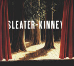
Year: 2005
Country: 🇺🇸 USA
Genres: Indie Rock
Favorite Song: Entertain
91. Slayer - Reign in Blood
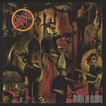
Year: 1986
Country: 🇺🇸 USA
Genres: Thrash Metal
Favorite Song: Angel of Death
90. The Dead Kennedys - Fresh Fruit for Rotting Vegetables
Year: 1980
Country: 🇺🇸 USA
Genres: Hardcore Punk
Favorite Song: Holiday in Cambodia
89. Belle and Sebastian - If You’re Feeling Sinister
Year: 1996
Country: 🇬🇧 United Kingdom
Genres: Chamber Pop
Favorite Song: Like Dylan in the Movies
88. Elliott Smith - Either/Or
Year: 1997
Country: 🇺🇸 USA
Genres: Singer-Songwriter
Favorite Song: Ballad of Big Nothing
86. Beach House - Bloom
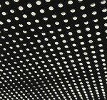
Year: 2012
Country: 🇺🇸 USA
Genres: Dream Pop
Favorite Song: Myth
85. Douji Morita - A Boy
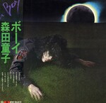
Year: 1977
Country: 🇯🇵 Japan
Genres: Chamber Folk
Favorite Song: 蒼き夜は
84. Novos Baianos - Acabou chorare
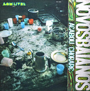
Year: 1972
Country: 🇧🇷 Brazil
Genres: Música Popular Brasileira
Favorite Song: Preta pretinha
83. Little Simz - Sometimes I Might Be Introvert
Year: 2021
Country: 🇬🇧 United Kingdom
Genres: Conscious Hip Hop
Favorite Song: Introvert
82. Ryuichi Sakamoto - Thousand Knives of Ryuichi Sakamoto
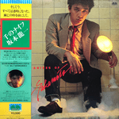
Year: 1978
Country: 🇯🇵 Japan
Genres: Progressive Electronic
Favorite Song: Thousand Knives
81. Fairouz - Wahdon
Year: 1979
Country: 🇱🇧 Lebanon
Genres: Mūsīqā lubnāniyya
Favorite Song: Al Bosta
80. Galneryus - Angel of Salvation
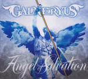
Year: 2012
Country: 🇯🇵 Japan
Genres: Power Metal
Favorite Song: Hunting for Your Dream
79. Various Artists - Hydeout Productions 2nd Collection
Year: 2007
Country: 🇯🇵 Japan
Genres: Instrumental Hip Hop
Favorite Song: Imaginary Folklore
78. Sea Power - Disco Elysium
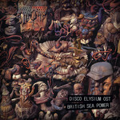
Year: 2019
Country: 🇬🇧 United Kingdom
Genres: Post-Rock
Favorite Song: Instrument of Surrender
77. Rolo Tomassi - Time Will Die and Love Will Bury It
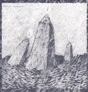
Year: 2018
Country: 🇬🇧 United Kingdom
Genres: Post-Metal
Favorite Song: A Flood of Light
76. Robbie Basho - Visions of the Country
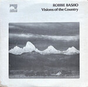
Year: 1978
Country: 🇺🇸 USA
Genres: American Primitivism
Favorite Song: Orphan’s Lament
75. Gang Starr - Moment of Truth
Year: 1998
Country: 🇺🇸 USA
Genres: Boom Bap
Favorite Song: Moment of Truth
74. Bob Dylan - Blood on the Tracks
Year: 1975
Country: 🇺🇸 USA
Genres: Singer-Songwriter
Favorite Song: Shelter from the Storm
73. Emperor - Anthems to the Welkin at Dusk
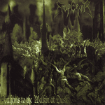
Year: 1997
Country: 🇳🇴 Norway
Genres: Symphonic Black Metal
Favorite Song: Ye Entrancemperium
72. JunxPunx - Reminder

Year: 2014
Country: 🇯🇵 Japan
Genres: Hi-Tech Psytrance
Favorite Song: Secret Girl
71. Jorge Ben - Fôrça bruta
Year: 1970
Country: 🇧🇷 Brazil
Genres: Samba Soul
Favorite Song: Oba, lá vem ela
70. Godspeed You! Black Emperor - Lift Yr. Skinny Fists Like Antennas to Heaven!
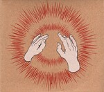
Year: 2000
Country: 🇨🇦 Canada
Genres: Post-Rock
Favorite Song: Storm
69. Camellia - Heart of Android
Year: 2018
Country: 🇯🇵 Japan
Genres: Electrohouse
Favorite Song: Together forever, my lovely video game cartridges
68. Billy Woods - Aethiopes
Year: 2022
Country: 🇺🇸 USA
Genres: Abstract Hip Hop
Favorite Song: Heavy Waters
67. Various Artists - Sonny Boy
Year: 2021
Country: 🇯🇵 Japan
Genres: Alternative Rock
Favorite Song: Sonny Boy Rhapsody
66. PJ Harvey - Stories From the City, Stories From the Sea
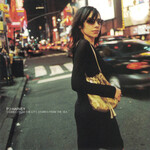
Year: 2000
Country: 🇬🇧 United Kingdom
Genres: Alternative Rock
Favorite Song: We Float
65. dälek - Absence
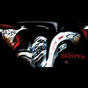
Year: 2005
Country: 🇺🇸 USA
Genres: Industrial Hip Hop, Abstract Hip Hop
Favorite Song: Distorted Pose
64. Snapcase - Progression Through Unlearning

Year: 1997
Country: 🇺🇸 USA
Genres: Metalcore
Favorite Song: Guilty by Ignorance
63. Gris - Il était une forêt

Year: 2007
Country: 🇨🇦 Canada
Genres: Depressive Black Metal
Favorite Song: Il était une forêt
62. Fela Anikulapo Kuti and Afrika 70 - Zombie
Year: 1977
Country: 🇳🇬 Nigeria
Genres: Afrobeat
Favorite Song: Zombie
61. Tim Hecker - Konoyo
Year: 2018
Country: 🇨🇦 Canada
Genres: Ambient, Drone, Gagaku
Favorite Song: This Life
60. Opeth - Blackwater Park
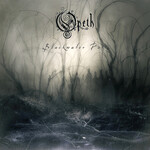
Year: 2001
Country: 🇸🇪 Sweden
Genres: Progressive Metal
Favorite Song: Blackwater Park
59. Barbara Dane - FTA!: Songs of the GI Resistance
Year: 1970
Country: 🇺🇸 USA
Genres: Contemporary Folk
Favorite Song: Resistance Hymn
58. Marvin Gaye - What’s Going On

Year: 1971
Country: 🇺🇸 USA
Genres: Smooth Soul
Favorite Song: What’s Going On
57. The Beatles - Abbey Road
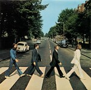
Year: 1969
Country: 🇬🇧 United Kingdom
Genres: Pop Rock
Favorite Song: Here Comes the Sun
56. Ninajirachi - I Love My Computer

Year: 2025
Country: 🇬🇧 United Kingdom
Genres: Electrohouse
Favorite Song: Infohazard
55. Natural Snow Buildings - Daughter of Darkness
Year: 2009
Country: 🇫🇷 France
Genres: Drone, Ritual Ambient
Favorite Song: (Not applicable)
54. Vangelis - Blade Runner
Year: 1980
Country: 🇺🇸 USA
Genres: Progressive Electronic
Favorite Song: Memories of Green
53. Tyler, the Creator - Igor

Year: 2019
Country: 🇺🇸 USA
Genres: Neo-Soul
Favorite Song: EARFQUAKE
52. Weyes Blood - Titanic Rising

Year: 2019
Country: 🇺🇸 USA
Genres: Psychedelic Pop
Favorite Song: Andromeda
51. toe - For Long Tomorrow

Year: 2009
Country: 🇯🇵 Japan
Genres: Math Rock
Favorite Song: Goodbye
50. Kow Otani - Haibane Renmei: Soundtrack Hanenone
Year: 2003
Country: 🇯🇵 Japan
Genres: Chamber Musik
Favorite Song: Refrain of Memory
49. Lorien Testard - Clair Obscur: Expedition 33
Year: 2025
Country: 🇫🇷 France
Genres: Classical Crossover
Favorite Song: Alicia
48. Judas Priest - Painkiller

Year: 1990
Country: 🇬🇧 United Kingdom
Genres: Speed Metal
Favorite Song: Painkiller
47. Kate Bush - Hounds of Love

Year: 1985
Country: 🇬🇧 United Kingdom
Genres: Art Pop
Favorite Song: Running Up That Hill (A Deal With God)
46. Swans - To Be Kind
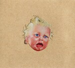
Year: 2024
Country: 🇺🇸 USA
Genres: Post-Rock
Favorite Song: She Loves Us
45. Mass of the Fermenting Dregs - Mass of the Fermenting Dregs
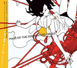
Year: 2006
Country: 🇯🇵 Japan
Genres: Shimokita-kei
Favorite Song: Delusionalism
44. My Chemical Romance - Three Cheers for Sweet Revenge

Year: 2004
Country: 🇺🇸 USA
Genres: Emo-Pop
Favorite Song: Helena
43. Yoshihiro Kanno - Angel’s Egg
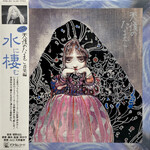
Year: 1985
Country: 🇯🇵 Japan
Genres: Modern Classical
Favorite Song: Prelude
42. Angelo Badalamenti - Twin Peaks: Fire Walk With Me

Year: 1992
Country: 🇺🇸 USA
Genres: Dark Jazz
Favorite Song: Questions in a World of Blue
41. Hannes Wader - Daß nichts bleibt wie es war
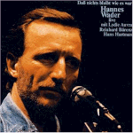
Year: 1982
Country: 🇩🇪 Germany
Genres: Liedermacher
Favorite Song: Es ist an der Zeit
40. Hikaru Utada - Heart Station
Year: 2008
Country: 🇯🇵 Japan
Genres: J-Pop
Favorite Song: Beautiful World
39. Sun Kil Moon - Ghosts of the Great Highway
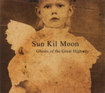
Year: 2003
Country: 🇺🇸 USA
Genres: Slowcore
Favorite Song: Duk Koo Kim
38. Lingua Ignota - Caligula

Year: 2019
Country: 🇺🇸 USA
Genres: Neoclassical Darkwave
Favorite Song: DO YOU DOUBT ME TRAITOR
37. Iron Maiden - The Number of the Beast

Year: 1982
Country: 🇬🇧 United Kingdom
Genres: Heavy Metal
Favorite Song: Run to the Hills
36. Ling Tosite Sigure - Still a Sigure Virgin?
Year: 2010
Country: 🇯🇵 Japan
Genres: Post-Hardcore
Favorite Song: This Is Is This?
35. Javiera Mena - Esquemas juveniles

Year: 2005
Country: 🇪🇸 Spain
Genres: Indie Pop
Favorite Song: Cámara lenta
34. Cameron Winter - Heavy Metal

Year: 2024
Country: 🇺🇸 USA
Genres: Singer-Songwriter
Favorite Song: $0.00
33. Portishead - Dummy

Year: 1994
Country: 🇬🇧 United Kingdom
Genres: Trip Hop
Favorite Song: Glory Box
32. Rage Against the Machine - Rage Against the Machine

Year: 1992
Country: 🇺🇸 USA
Genres: Alternative Metal
Favorite Song: Killing in the Name
31. Parannoul - To See the Next Part of the Dream

Year: 2021
Country: 🇰🇷 South Korea
Genres: Shoegaze, Emo
Favorite Song: White Ceiling
30. Fishmans - 98.12.28 Otokotachi no wakare
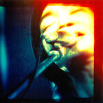
Year: 1999
Country: 🇯🇵 Japan
Genres: Dream Pop, Neo-Psychedelia
Favorite Song: Long Season
29. Electric Light Orchestra - Time

Year: 1981
Country: 🇬🇧 United Kingdom
Genres: Pop Rock
Favorite Song: Twilight
28. Panopticon - …And Again Into the Light

Year: 2021
Country: 🇺🇸 USA
Genres: Atmospheric Black Metal
Favorite Song: Dead Loons
27. FKA Twigs - Magdalene

Year: 2019
Country: 🇬🇧 United Kingdom
Genres: Art Pop
Favorite Song: Cellophane
26. David Bowie - Low

Year: 1977
Country: 🇬🇧 United Kingdom
Genres: Art Rock, Ambient
Favorite Song: Warszawa
25. Perfume - ⊿ (Triangle)

Year: 2008
Country: 🇯🇵 Japan
Genres: Electropop
Favorite Song: Dream Fighter
24. Ocean Machine - Biomech

Year: 1997
Country: 🇨🇦 Canada
Genres: Progressive Metal
Favorite Song: Bastard
23. Charles Mingus - The Black Saint and the Sinner Lady
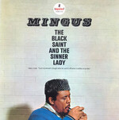
Year: 1963
Country: 🇺🇸 USA
Genres: Avant-Garde Jazz
Favorite Song: Trio and Group Dancers
22. Nas - Illmatic

Year: 1994
Country: 🇺🇸 USA
Genres: Boom Bap
Favorite Song: N.Y. State of Mind
21. My Bloody Valentine - Loveless

Year: 1991
Country: 🇮🇪 Ireland
Genres: Shoegaze
Favorite Song: when you sleep
20. Kessoku Band - Kessoku Band

Year: 2022
Country: 🇯🇵 Japan
Genres: Shimokita-kei
Favorite Song: Rockn’ Roll, Morning Light Falls on You
19. System of a Down - Toxicity

Year: 2001
Country: 🇺🇸 USA
Genres: Alternative Metal
Favorite Song: Aerials
18. Lana Del Rey - Norman Fucking Rockwell!

Year: 2018
Country: 🇺🇸 USA
Genres: Art Pop
Favorite Song: Venice Bitch
17. Kendrick Lamar - To Pimp a Butterfly

Year: 2015
Country: 🇺🇸 USA
Genres: West Coast Hip Hop
Favorite Song: Alright
16. Ichiko Aoba - Windswept Adan

Year: 2020
Country: 🇯🇵 Japan
Genres: Chamber Folk
Favorite Song: Porcelain
15. Seatbelts - Cowboy Bebop

Year: 1998
Country: 🇯🇵 Japan
Genres: Jazz
Favorite Song: Space Lion
14. The Pillows - FLCL Original Soundtrack No. 3

Year: 2005
Country: 🇯🇵 Japan
Genres: Power Pop
Favorite Song: Last Dinosaur
13. Stevie Wonder - Songs in the Key of Life

Year: 1976
Country: 🇺🇸 USA
Genres: Pop Soul
Favorite Song: Sir Duke
12. Gorguts - Colored Sands

Year: 2013
Country: 🇨🇦 Canada
Genres: Dissonant Death Metal
Favorite Song: Le Toit Du Monde
11. Carly Rae Jepsen - E·MO·TION

Year: 2015
Country: 🇨🇦 Canada
Genres: Synthpop
Favorite Song: Run Away With Me
10. Cocteau Twins - Heaven or Las Vegas

Year: 1990
Country: 🇬🇧 United Kingdom
Genres: Dream Pop
Favorite Song: Heaven or Las Vegas
9. Radiohead - In Rainbows

Year: 2008
Country: 🇬🇧 United Kingdom
Genres: Art Rock
Favorite Song: Weird Fishes/Arpeggi
8. Pink Floyd - Wish You Were Here

Year: 1975
Country: 🇬🇧 United Kingdom
Genres: Art Rock
Favorite Song: Wish You Were Here
7. Mac Miller - Circles

Year: 2020
Country: 🇺🇸 USA
Genres: Neo-Soul
Favorite Song: Good News
6. Keiichi Okabe & Keigo Hoashi - NieR:Automata

Year: 2017
Country: 🇯🇵 Japan
Genres: Cinematic Classical, Ambient, New Age
Favorite Song: City Ruins (Rays of Light)
5. Converge - Jane Doe

Year: 2001
Country: 🇺🇸 USA
Genres: Mathcore
Favorite Song: Jane Doe
4. Kinoko Teikoku - Eureka

Year: 2013
Country: 🇯🇵 Japan
Genres: Indie Rock, Shoegaze
Favorite Song: Musician
3. Shiina Ringo - Kalk Samen Kuri no Hana

Year: 2003
Country: 🇯🇵 Japan
Genres: Art Pop, Art Rock
Favorite Song: Shuukyou -Religion-
2. Carissa’s Wierd - Songs About Leaving

Year: 2002
Country: 🇺🇸 USA
Genres: Slowcore
Favorite Song: September Come Take This Heart Away
1. Light Bringer - Scenes of Infinity

Year: 2013
Country: 🇯🇵 Japan
Genres: Power Metal, Symphonic Metal
Favorite Song: Hyperion